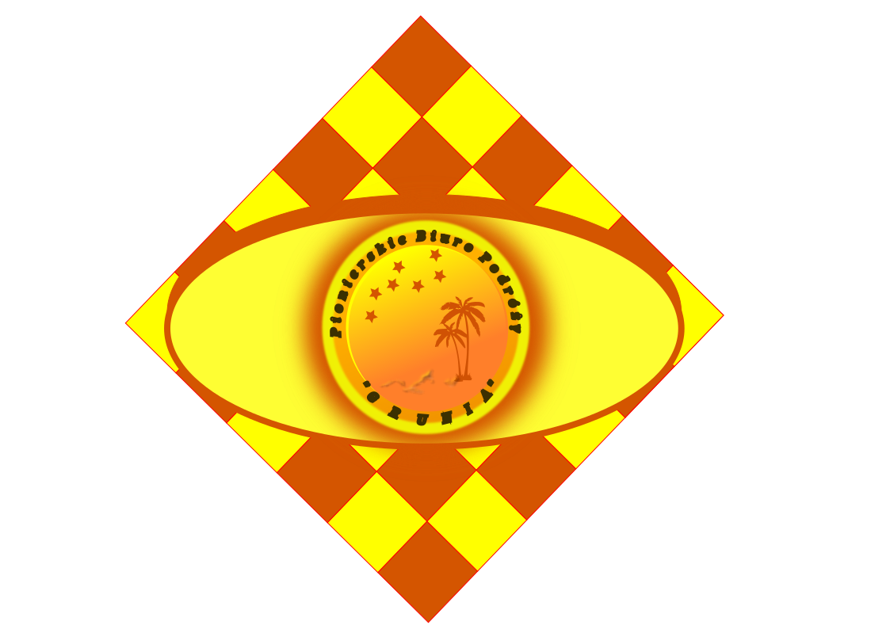

PROMUJE!!
Mamy świadomość, że realizacja MARZEŃ, potyka się najczęściej o prozaiczne - acz ważne! - czynniki (najczęściej finansowe!!). Dlatego też regularną praktyką "GRUNI", jest wspieranie osób niepełnosprawnych i częściowe sponsorowanie im konkretnej, wybranej imprezy. Obowiązuje tu stała i niezmienna zasada zniżki: "50 - 30 - 10" (stosownie do stopnia niepełnosprawności). Zasada ta, dotyczy także przewodników tych osób!!
Dzisiaj "Hitem" Biura, jest 15 dni pobytu w legendarnej Wenecji, wraz z pełnym programem rekreacyjno-turystycznym. Noclegi, całodzienne wyżywienie, basen, saunę i inne atrakcje, zapewnia hotel "Casa Petrarca" (zdj. nr 1). W naszym programie m.in.: piesze wycieczki po urokliwej Wenecji, połączone ze zwiedzaniem licznych zabytków miasta. Musimy więc być na Placu i w Bazylice "Świętego Marka" (zdj. nr 2) - wraz z jej arcydziełem "Pala d'Oro", wstąpimy do "Pałacu Doży" i wyjaśnimy sobie, skąd się wzięła poetycka nazwa "Most Westchnień" (zdj. nr 3). Odwiedzimy liczne zabytki sakralne tego miasta oraz malownicze jego zaułki i dzielnice. Odkryjemy też tajemnicę pochodzenia złowróżbnego słowa "Getto" i dlaczego powiązano je z jedną z weneckich dzielnic. Popływamy sobie po "Canale Grande" (zdj. nr 4), głównej arterii komunikacyjnej tego miasta (zdj. nr 5). Będziemy podziwiali formy i kształty architektoniczne mostów, łączących brzegi tego kanału - w tym i ten najsłynniejszy, jakim jest "Most Rialto" (zdj. nr 6). Wenecja, to właściwie archipelag wysp laguny. Popłyniemy więc na niektóre z tych wysp: na Burano (zdj. nr 7) - znaną z arcydzieł koronkarstwa (zdj. nr 8), na Murano (zdj. nr 9) - słynną z wyrobów rękodzielnictwa szklarskiego (zdj. nr 10) oraz pozwolimy owładnąć sobą przez czar wyspy Torcello (zdj. nr 11) wraz z jej najstarszymi zabytkami w cywilizacji laguny (zdj. nr 12). A gdy już i nas zmęczenie ogarnie, gdy nasze ciała zapragną słońca i kąpieli, piaski plaży Lido di Venezia (zdjęcie nr 13), otulą je i pozwolą wypocząć (zdj. nr 14). Z pełnych wrażeń, wypraw morskich, wracać będziemy do centrum miasta - naszej bazy! - pod bacznym okiem służb "Przylądka Celnego" (zdj. nr 15).
Wszystkich tych atrakcji, doświadczysz w atrakcyjnej cenie 2500 zł od osoby. Rezydentem "GRUNI" w hotelu "Casa Petrarca" jest Cesare Maldini, którego wspierać tam będzie Nasz opiekun grupy - rozsławiony nazwiskiem! - Grzegorz Brzęczyszczykiewicz, wraz z przewodnikiem - Erosem Ramazzottim. Każdy uczestnik, opłaca indywidualnie swoje wejścia do muzeów i zwiedzanych miejsc. Posiadać więc powinien min. 100 euro środków własnych. Termin wyjazdu - klimatyzowanego i wyposażonego w sprzęt RTV - autokaru z Jeleniej Góry: 31.11.2024 r., godzina 10-ta (spóźnieni mają jeszcze szansę wejścia na pokład, tylko do granicy kraju!). Przybycie do Wenecji - godzina 19-ta. A potem?? Potem - to już tylko klękajcie Narody!!